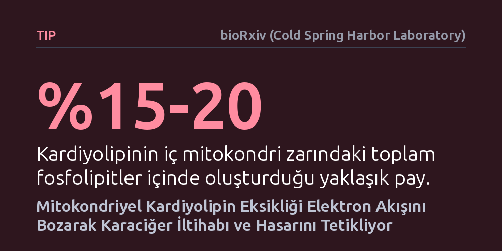

TIP · bioRxiv (Cold Spring Harbor Laboratory) · 2026-09-08
Araştırmacılar, karaciğer yağlanmasının iltihaplı evreye geçişinde mitokondri zarındaki kardiyolipin yağının rolünü inceledi. Kardiyolipin kaybının solunum zincirini bozarak elektron sızıntısını ve oksidatif stresi artırdığı, farelerde doğrudan karaciğer hasarına ve doku sertleşmesine yol açtığı saptandı.
Bu bulgu, basit karaciğer yağlanmasının doku hasarına dönüşmesinde mitokondri zarındaki özel bir lipit kaybının ve tetiklenen serbest radikal üretiminin kilit bir biyokimyasal basamak olduğunu göstermektedir.

Metabolik işlev bozukluğuna bağlı karaciğer yağlanması (MASLD), küresel ölçekte obezite artışına paralel olarak yaygınlaşan önemli bir sağlık sorunudur. Hastaların büyük bir bölümünde süreç, karaciğer hücrelerinde sadece yağ birikimiyle seyreden ve erken evrede belirgin bir iltihaba yol açmayan görece zararsız bir aşamada kalır. Ancak hastalık bazı bireylerde karaciğer hücresi hasarı, kronik iltihaplanma ve doku sertleşmesiyle (fibrozis) tanımlanan steatohepatit (MASH) evresine ilerler.
Bu iltihaplı evre, karaciğer yetmezliği ve siroza giden yolda geri döndürülebilme ihtimali taşıyan son aşamadır. Bilim insanları uzun süredir hücrenin enerji santrali olan mitokondrilerin bu geçişte kritik bir rol oynadığını bilmektedir. Ancak mitokondri iç zarı yapısının ve bu zardaki biyokimyasal dengesizliklerin hastalığın ilerlemesini nasıl yönlendirdiği ayrıntılı olarak bilinmiyordu.
Araştırmacılar ilk olarak ileri evre MASH nedeniyle karaciğer nakli ya da ameliyatı geçiren hastaların karaciğer mitokondrilerini inceledi. Bu örnekler, iltihabi olmayan karaciğer dokularıyla karşılaştırıldı. Eş zamanlı olarak, yüksek yağlı beslenme ve genetik obezite dahil olmak üzere dört farklı fare karaciğer yağlanması modelinde mitokondriler saflaştırılarak kütle spektrometrisiyle lipit haritalaması çıkarıldı.
Hem insan örneklerinde hem de fare modellerinde, mitokondri iç zarına özgü bir fosfolipit olan kardiyolipin düzeylerinin belirgin biçimde azaldığı görüldü. Bunun üzerine araştırmacılar nedensel mekanizmayı test etmek amacıyla farelerin sadece karaciğer hücrelerinde kardiyolipin üretiminden sorumlu olan enzimi (kardiyolipin sentaz) genetik olarak devre dışı bıraktı. Elde edilen fareler, normal diyetle beslendiklerinde dahi karaciğerde yağlanma, doku sertleşmesi ve karaciğer enzimlerinde artış geliştirdi.
Mitokondri iç zarında kardiyolipin eksildiğinde, enerji üretiminde görev alan solunum zinciri proteinlerinin oluşturduğu 'süperkompleks' mimarisinin parçalandığı tespit edildi. Normal koşullarda elektronlar bu kompleksler arasında düzenli bir sırayla iletilerek hücrenin enerjisi üretilir. Kardiyolipin ortadan kalktığında ise elektron akışı aksamakta ve elektronlar zardan dışarı sızmaktadır.
Yazarlar yaptıkları biyokimyasal analizlerde, kardiyolipin eksikliğinin "solunum zincirini bozarak elektron sızıntısını ve oksidatif stresi artırdığı" sonucuna vardı. Bu kaçak elektronlar oksijenle birleşerek serbest radikaller (özellikle hidrojen peroksit) oluşturdu ve hücre içi antioksidan kapasitesini aşarak doku hasarını başlattı. İzole edilen mitokondrilere yapay veziküller aracılığıyla dışarıdan kardiyolipin geri yüklendiğinde ise bu elektron sızıntısının yeniden normal düzeylere inmesi, etkinin doğrudan kardiyolipin kaybından kaynaklandığını doğruladı.
Elde edilen sonuçlar, karaciğer dokusunda mitokondri zar lipitlerinin 단순히 yapısal bir kılıf olmadığını, elektron taşınmasının verimliliğini doğrudan kontrol ettiğini ortaya koymaktadır. Kardiyolipin eksikliğinin tek başına dahi karaciğerde klasik bir iltihap ve sertleşme tablosunu tetikleyebilmesi, mitokondri zarı onarımını hedefleyen yeni tedavi yaklaşımları için kuramsal bir zemin sunmaktadır.
Bununla birlikte çalışmanın önemli bir sınırı bulunmaktadır. Yazarlar, deneylerin kardiyolipin eksikliğinin elektron sızıntısını ve doku hasarını başlattığını sağlam şekilde kanıtladığını, ancak hastalığın insanlardaki doğal seyrinde ilk tetikleyici basamak olup olmadığını tam olarak aydınlatmadığını ifade etmektedir. Yani kardiyolipin kaybı karaciğer yağlanmasında doğrudan neden olabileceği gibi, mevcut hasarın hızlandırıcı bir sonucu da olabilir.